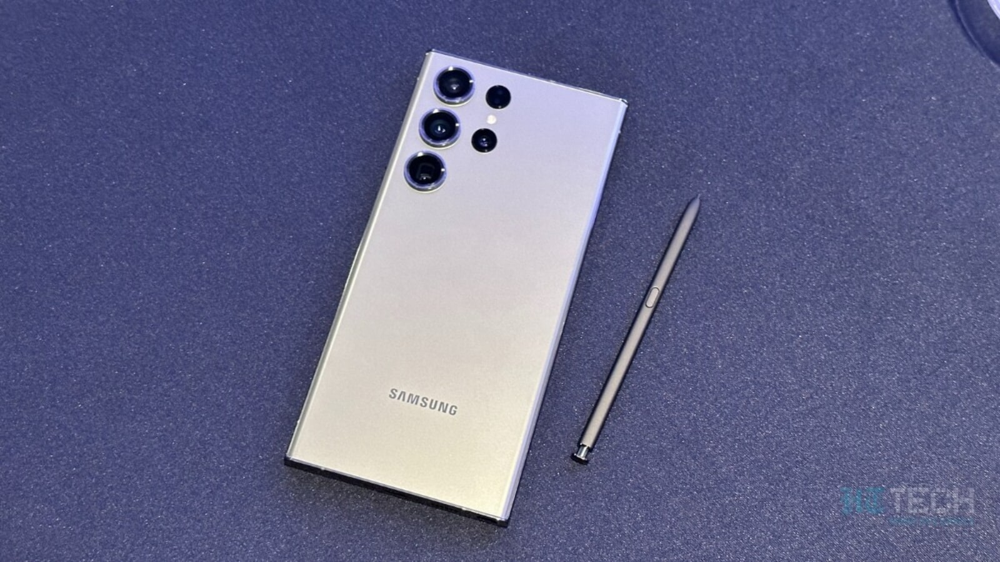

Google AI Chatbot Reveals Its Top 5 Smartphones of 2023
Image Credits https://tech.hindustantimes.com/mobile/news/google-bard-reveals-its-top-5-smartphones-of-2023-number-3-will-surprise-you-71686376027580.html
Mobile technology is advancing faster than ever before. With each passing year, we see new and exciting innovations in smartphones that push the boundaries of what is possible. In fact, Google's AI conversational chatbot, Bard, has recently revealed its top 5 smartphones of 2023. And the list is quite surprising. Here's what we've learned:
The Top 5 Smartphones of 2023, According to Google's AI Chatbot, Bard
- Apple iPhone 14 Pro Max - This top-of-the-line iPhone will reportedly come with a foldable OLED display, 10x optical zoom, and 1TB of storage. Its A17 Bionic chip will be capable of handling the most demanding tasks.
- Samsung Galaxy S21 Ultra 2 - The successor to the popular Galaxy S21 Ultra will feature a stunning 6.9-inch QHD+ Super AMOLED display, an improved camera system with 10x lossless zoom, and a powerful Exynos 2200 processor.
- OnePlus 13 Pro - OnePlus will reportedly go all out with the 13 Pro, offering a 120Hz LTPO AMOLED display, a quad-camera setup with a 64MP primary sensor, and a Snapdragon 895 chip with 5G support.
- Huawei P60 Pro - Huawei's P60 Pro will come with a 6.8-inch OLED display, a penta-camera setup with 100x zoom, and a Kirin 1300 chip that promises performance on par with Qualcomm's Snapdragon 895.
- Xiaomi Mi 14 - Xiaomi's flagship smartphone will feature a 6.67-inch OLED display with under-display camera technology, a 108MP primary camera, and a Snapdragon 895 processor.
It's worth noting that the above list is purely speculative, and it's entirely possible that some of these devices could be scrapped or overhauled in the next two years. However, it's still exciting to see what the future of mobile technology could look like.
The Future of Mobile Technology: What to Expect in 2023 and Beyond
While Bard's list gives us a glimpse into the near future, we can't help but wonder what other cutting-edge features smartphone manufacturers will introduce in the years to come. Here are some possibilities:
- Foldable Devices Become Mainstream - Foldable devices are still a niche market, but with each passing year, they become more refined and affordable. It's entirely possible that foldable smartphones will become mainstream by 2023, offering users a whole new level of flexibility and utility.
- Augmented Reality Goes Mainstream - Augmented reality (AR) technology is already available on some smartphones, but it's still in its infancy. By 2023, we could see AR become a staple feature of high-end smartphones, allowing users to seamlessly integrate digital content into their physical environment.
- 5G Becomes Ubiquitous - 5G technology is already available in some parts of the world, but it's far from ubiquitous. By 2023, we should see 5G become more widespread, allowing users to enjoy lightning-fast download and upload speeds on their smartphones.
Conclusion
The future of mobile technology is incredibly exciting, and with each passing year, we see new and innovative features that make our smartphones even more powerful and versatile. While Bard's list of top smartphones in 2023 is purely speculative, it's still fascinating to see what the future could hold. Whether it's foldable devices, augmented reality, or ubiquitous 5G, the possibilities are endless.

References
Hashtags
- #smartphones
- #mobiletechnology
- #futuretechnology
- #foldabledevices
- #augmentedreality
- #5G
- #GoogleAIchatbot
- #topsmartphones
Curated by Team Akash.Mittal.Blog
Share on Twitter Share on LinkedIn